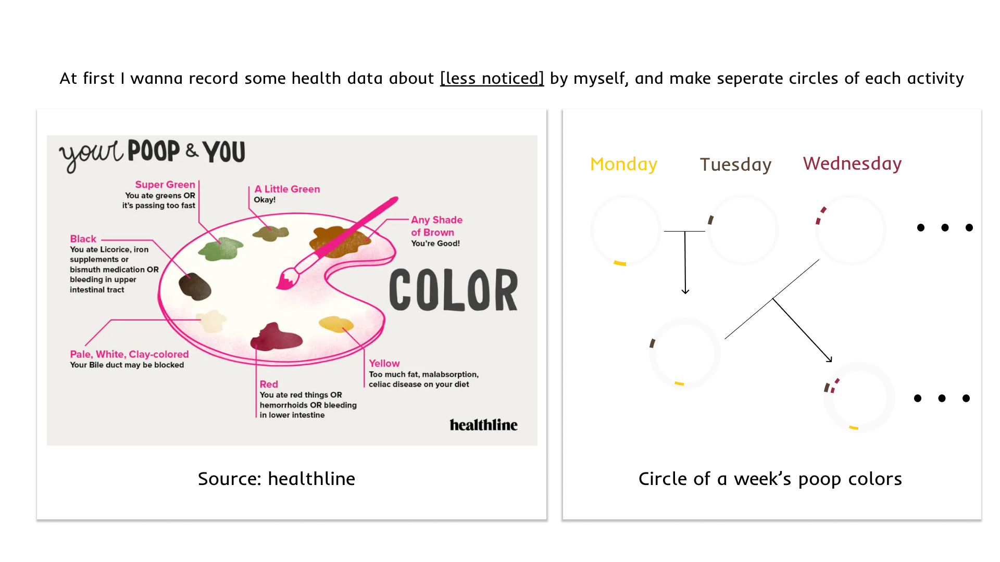
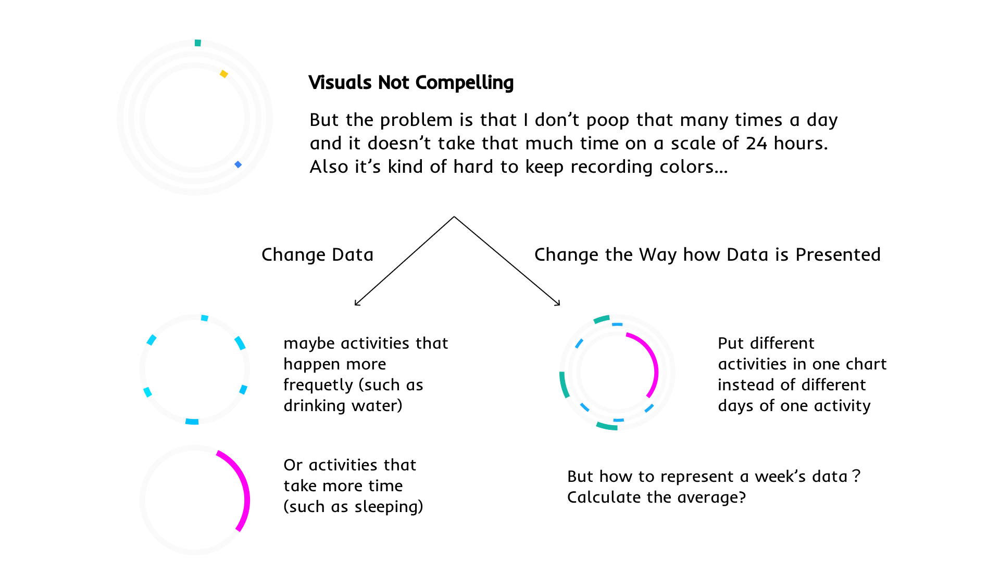
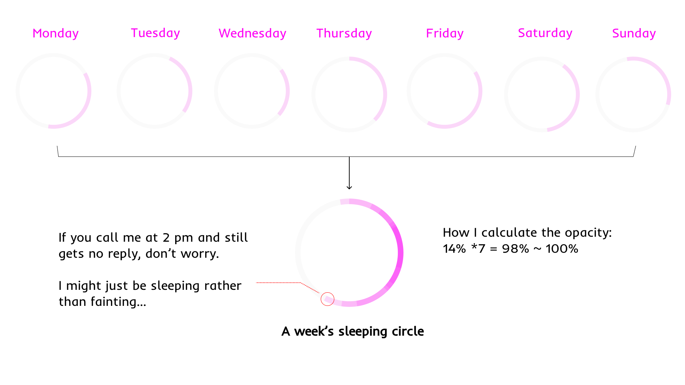

For this assignment, I’m trying to show some data related to my health/lifestyle. But I don’t want to simply visualize those health data commonly collected by smart devices, such as heart rate, blood pressure. Instead, I hope to get more insight into small details of my daily life, like how often do I drink water? Hopefully, by displaying time data of all those activities together could imply whether I'm living a healthy life or not.
The final design is several concentric circles, with different colors representing different activities. The circle itself represents 24 hours of a day. Each circle is the overlaying cumulation of one week’s time data.
In a nutshell, sleeping + eating/drinking + exercising = my day. I won't make more comments on my life circle here because this is to represent personal data rather than analyze it.
Based on suggestions from the class, I also make breakdowns of each activity with specific contexts to provide more information about the data.
I began my design from both the data itself and the strategy to present the data. As shown in my design workbook, I first brainstormed some personal data less noticed or less documented. For example, the colors/shapes of my poop. After that, I started to try out different strategies of representing the data. Just to me, legibility weighs a lot when designing a data representation. So a variant of pie chart came to my mind, which not only has the potential to show the multidimensional composition of a person, but also looks like a clock in nature.
I made some simple versions to test my initial thought, but then I found that if I made concentric circles of only one activity using data from different days, the visuals would be less compelling. Then I made two iterations on it. First, I made changes on the data itself. If I chose more activities and especially those that happen more frequently or take longer time, apparently the visuals would be more compelling. Secondly, I abandoned the idea of showcasing data of each day, but put them all together to create some overlapping effect. In this way, I could also compare the data of different activities together.
These are some sketches of how I tested out my ideas and made interactions based on the visual effects.
 These are some sketches of my design in progress, showing how I decided on the opacity of each day’s color circle and how I added annotations to each activity to provide more context.
After I made the overlapping circle of each activity and made comments on them, I started to put them all together to see the overall effect(which is shown in the final design part as above). By putting all these small activities together, I found many interesting patterns which I never noticed about my lifestyle. For example, I always drink some water before going to sleep. And during weekends, I always tend to poop at midnight… Besides, I went extra mile to divide the overall concentric circles into three parts — exercise, eating/drinking, sleeping. Also a practice to add more context to the visuals.
~Fluency: For data it self, I had come up with a lot of ideas, including the frequency of saying “sorry” in a week, the recent books I’ve read, the growth of my hair, etc. For how to present the data, I also made many different trials and selected the one that I think suits what I want to express most. Though I had to choose one representation to deliver for this assignment, all those were wonderful ideas to explore more.
~Flexibility: I made 5 circles for different activities, and each circle with 7 days of data. I also made on average 3 comments on those data to add more context to them.
~Originality: Though many people have made data representations about health-related data, few have tended to how the happening time/frequency of some everyday activities could imply whether you are living a healthy life or not, especially when put together as a comparison.
~Elaboration: Besides the legibility of the pie chart itself, I also added many notes to give more context to why a specific event happened at that time and to reveal some interesting trends.
~Using a non-traditional social theory/perspective: Structuralism is an intellectual current and methodological approach, primarily in the social sciences, that interprets elements of human culture by way of their relationship to a broader system. I personified the structuralist perspective, seeing my everyday lifestyle as a complete system, with every little health-related activity being part of what makes up that system. So it was only when I put the data from each event together and compared them that I realized that the organic correlation between them can sometimes be indicative of something wrong with the system as a whole. To make it simpler, let’s take an example. I have never realized before that I seldom drink water during lunch/dinner, which is kind of unhealthy due to some nutrition theory.
~Combining data sets not usually combined: As shown above, since I paid attention to the organic interaction between all those different activities, I found a lot of interesting patterns about my lifestyle. It was because I chose the strategy of combining those data into the concentric circles that made these findings possible, which is less commonly seen when people curate these data.
I collected data regarding my eating, pooping activities by myself (just by stopwatch). I used Apple watch to record data regarding my sleeping and exercising activities. I used an app called Water Tracker to collect data regarding my drinking activities.
Other resources I used included ChatGPT for code framworks, Healthline for some images, Figma Community for pixel icons.